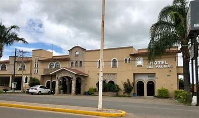
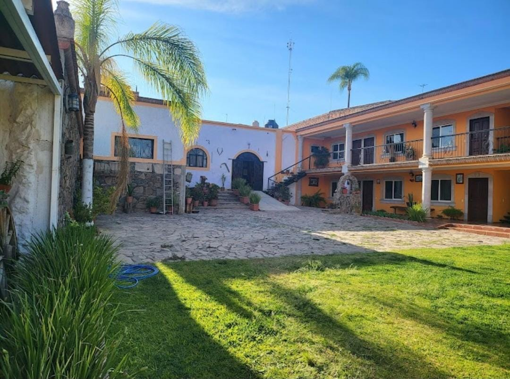
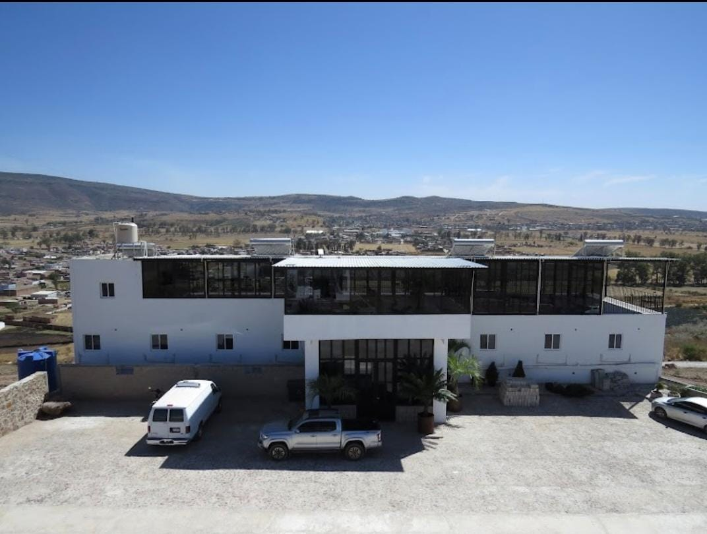

Cuquío ofrece opciones cómodas y accesibles para que disfrutes tu estancia en el municipio. Aquí te presentamos algunos de los hoteles disponibles:

Ubicado cerca del centro, el Hotel Las Palmas es ideal para quienes buscan una estancia tranquila y accesible.

Este acogedor hotel ofrece un ambiente rústico y tradicional, perfecto para una experiencia más cercana a la esencia de Cuquío.

Con una ubicación céntrica, el Hotel San Fernando es una excelente opción para turistas que buscan comodidad y cercanía a los principales atractivos.